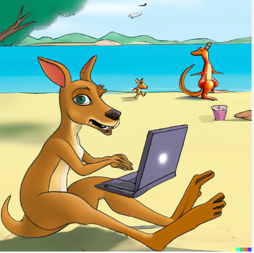

Introduction

- Personal Background: I am originally from North Africa and now live in the U.S., balancing being a mom, working, and going to school. I enjoy learning new things, especially in technology, and I’m focused on building a better future for myself and my family.
- Professional Background: I currently work as a Banker at Truist Bank. Before that, I worked in fashion retail stores, gaining experience in customer service and sales. I’m gaining both sales and tech skills and working toward transitioning into a tech-related role in the future.
- Academic Background: I am pursuing a degree in Full Stack Programming. I have completed courses in Python, software development, and project management. This semester I am focusing on web development and professional communication to strengthen both technical and workplace skills.
- Background in this Subject: I don’t have much coding experience but have used software like MATLAB and ANSYS. Those gave me a small introduction to programming, but I’m still new overall. I’m looking forward to building my skills in this class.
- Primary Computer Platform: I mainly use a Windows computer for schoolwork and daily tasks, running Windows 11.
- Courses I’m Taking & Why:
- WEB-115: Web Markup and Scripting – To deepen my knowledge of HTML and CSS, building on WEB-110.
- WEB-140: Web Development Tools – To gain hands-on experience with web application tools for current projects and future tech roles.
- CTS-118: IS Professional Communication – To improve my ability to explain technical information clearly for client interactions and teamwork.
- Funny/Interesting Item to Remember Me By: I measure productivity in cups of coffee.
- Also to Share: When I’m in the U.S., I miss Algeria; when I’m in Algeria, I miss the U.S. Sometimes it feels like I don’t fully exist in either place.